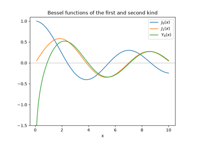
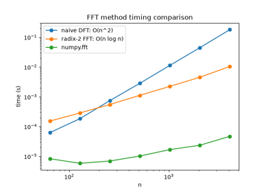

Breakthroughs in Special Functions and Transforms#
“I have had my results for a long time, but I do not yet know how I am to arrive at them.” – Carl Friedrich Gauss, on withholding publication of results he could not yet prove rigorously, as recorded by Wolfgang Sartorius von Waltershausen
The “special functions” – gamma, Bessel, the orthogonal polynomial
families – are special precisely because they recur, unbidden, as the
exact solutions to an enormous range of unrelated differential
equations, from vibrating drumheads to quantum wavefunctions. This
chronology traces the ideas behind mathematicskit.special_functions, from
Euler’s extension of the factorial to the algorithm, rediscovered from a
much older idea, that made digital signal processing computationally
feasible at all.
1729 – Euler’s Gamma Function#
Leonhard Euler, answering a question posed by Christian Goldbach about interpolating the factorial to non-integer values, gave in an October 1729 letter an infinite-product formula for exactly such an interpolation – the function later named \(\Gamma\) by Adrien-Marie Legendre, satisfying \(\Gamma(n) = (n-1)!\) at positive integers and extending smoothly (and, at negative integers, with poles) everywhere else. Legendre’s 1811 companion function \(B(a,b)\), expressible directly in terms of \(\Gamma\), arose from his own studies of elliptic integrals.
Implementation: mathematicskit.special_functions.systems.gamma_beta.gamma_function()
and beta_function()
wrap scipy.special.gamma()/beta() directly;
log_gamma_function()
wraps the numerically stable scipy.special.gammaln() for
arguments large enough that \(\Gamma\) itself would overflow.
References: L. Euler, letter to C. Goldbach, 13 October 1729, in P.-H. Fuss, ed., Correspondance Mathematique et Physique de Quelques Celebres Geometres du XVIIIeme Siecle, vol. 1 (St. Petersburg, 1843), 56-60.
1817 – 1824 – Bessel Functions#
Daniel Bernoulli had already encountered, in his 1730s studies of a hanging chain’s oscillation, solutions of what is now recognized as a special case of Bessel’s equation; Friedrich Wilhelm Bessel’s 1824 memoir on planetary perturbations gave the general family of solutions its first systematic treatment and tabulation, motivated by exactly the kind of periodic, cylindrically symmetric problem (here, Kepler’s equation) where these functions arise naturally. \(J_\nu\), regular at the origin, and \(Y_\nu\), singular there, are the two linearly independent solutions of the same second-order equation, and now appear throughout physics and engineering wherever a problem has cylindrical symmetry: vibrating drumheads, waveguides, heat conduction in a cylinder.
Implementation: mathematicskit.special_functions.systems.bessel.bessel_first_kind()
and bessel_second_kind()
wrap scipy.special.jv()/yv() directly, and
are checked in this domain’s tests against the defining differential
equation itself via finite differences.
References: F. W. Bessel, “Untersuchung des Theils der planetarischen Storungen, welcher aus der Bewegung der Sonne entsteht,” Abhandlungen der Koniglichen Akademie der Wissenschaften zu Berlin (1824), 1-52.

Bessel functions of the first and second kind
1782 – 1859 – Legendre and Chebyshev Polynomials#
Adrien-Marie Legendre’s 1782 work on the attraction of spheroids introduced the polynomial family that solves Laplace’s equation in spherical coordinates and now bears his name, orthogonal on \([-1,1]\) with the plainest possible weight, 1. Pafnuty Chebyshev’s 1854 memoirs on least-deviation approximation (see the numerical-analysis chronology) introduced a second family, orthogonal with respect to the weight \(1/\sqrt{1-x^2}\) and expressible in closed form as \(T_n(x) = \cos(n\arccos x)\) – the family whose minimal-oscillation property is exactly what makes Chebyshev nodes the cure for Runge’s phenomenon.
Implementation: mathematicskit.special_functions.systems.orthogonal_polynomials.legendre_polynomial()
and chebyshev_polynomial()
wrap numpy.polynomial.legendre.legval()/chebval()
directly, with orthogonality verified numerically via
mathematicskit.special_functions.utils.orthogonality.inner_product().
References: A.-M. Legendre, “Recherches sur l’attraction des spheroides homogenes,” Memoires de Mathematique et de Physique, presentes a l’Academie Royale des Sciences 10 (1785), 411-434 (presented 1782).
1810s – 1879 – Hermite and Laguerre Polynomials#
Pierre-Simon Laplace and, independently and more systematically, Pafnuty Chebyshev studied polynomials orthogonal with respect to the Gaussian weight \(e^{-x^2}\) in the 1810s-1850s; Charles Hermite’s 1864 memoir gave them their definitive treatment and the name they carry today. Edmond Laguerre’s 1879 paper introduced the complementary family orthogonal on the half-line \([0,\infty)\) with weight \(e^{-x}\). Both families would turn out, half a century later, to be exactly the eigenfunctions quantum mechanics needed: Hermite polynomials for the quantum harmonic oscillator, Laguerre polynomials for the radial part of the hydrogen atom’s wavefunctions.
Implementation: mathematicskit.special_functions.systems.orthogonal_polynomials.hermite_polynomial()
and laguerre_polynomial()
wrap numpy.polynomial.hermite.hermval()/lagval(),
with orthogonality against each family’s own weight verified numerically
via scipy.integrate.quad() over an infinite domain.
References: C. Hermite, “Sur un nouveau developpement en serie des fonctions,” Comptes Rendus de l’Academie des Sciences 58 (1864), 93-100, 266-273; E. Laguerre, “Sur l’integrale \(\int_x^\infty e^{-x}x^{-1}dx\),” Bulletin de la Societe Mathematique de France 7 (1879), 72-81.
Four orthogonal polynomial families
1822 – 1965 – Fourier’s Theorem and the Fast Fourier Transform#
Joseph Fourier’s 1822 treatise on heat conduction claimed, controversially for its time, that essentially any periodic function can be represented as a sum of sines and cosines – a claim rigorously justified only gradually over the following century, but one that gave the discrete Fourier transform its entire conceptual foundation once digital computation made it something to actually compute. James Cooley and John Tukey’s 1965 paper – rediscovering, largely independently, an algorithm Carl Friedrich Gauss had sketched already in an unpublished 1805 manuscript on interpolating asteroid orbits – showed how to compute the length-\(N\) discrete Fourier transform recursively from two length-\(N/2\) transforms, reducing the cost from \(O(N^2)\) to \(O(N\log N)\): an algorithmic speedup so large for the signal lengths radar and telecommunications needed that it is routinely credited with making digital signal processing practical at all.
Implementation: mathematicskit.special_functions.systems.fourier_transform.fft_numpy()
wraps numpy.fft.fft() as the primary API;
dft_naive()
and fft_radix2()
implement, hand-rolled, exactly the naive \(O(N^2)\) sum and
Cooley-Tukey’s radix-2 recursive halving respectively, with
compare_fft_methods()
timing all three directly against each other to make the
\(O(N^2)\) vs. \(O(N\log N)\) gap concretely visible – the one
sub-module in this domain where hand-rolling, rather than a direct
library call, is the point.
References: J. Fourier, Theorie Analytique de la Chaleur (Paris: Firmin Didot, 1822); J. W. Cooley and J. W. Tukey, “An Algorithm for the Machine Calculation of Complex Fourier Series,” Mathematics of Computation 19(90) (1965), 297-301; M. T. Heideman, D. H. Johnson, and C. S. Burrus, “Gauss and the History of the Fast Fourier Transform,” Archive for History of Exact Sciences 34(3) (1985), 265-277 (documenting Gauss’s unpublished 1805 anticipation).

O(n^2) vs. O(n log n): naive DFT vs. radix-2 FFT vs. numpy.fft